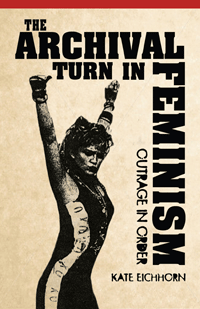

A window into the preservation of contemporary feminist documents and artifacts and how this archival activism has advanced intergenerational political alliances
A window into the preservation of contemporary feminist documents and artifacts and how this archival activism has advanced intergenerational political alliances


 A window into the preservation of contemporary feminist documents and artifacts and how this archival activism has advanced intergenerational political alliances
A window into the preservation of contemporary feminist documents and artifacts and how this archival activism has advanced intergenerational political alliances

|  |
The Archival Turn in FeminismOutrage in OrderKate Eichhornpaper EAN: 978-1-43990-952-2 (ISBN: 1-4399-0952-0) |
"The Archival Turn in Feminism is original, theoretically sophisticated, and compelling in its implications. Kate Eichhorn effectively situates the recent archival investment in Riot Grrrl and other supposed ‘Third Wave’ forms of feminism in the longer history of feminist efforts to narrate the movement's past. She argues with admirable clarity that archives should not simply be treated as spaces of preservation but rather as active responses to the complex demands of particular historical conditions. Eichhorn's book is well informed about the recent history of practices of librarianship and archiving and the kind of rethinking that the work of Foucault and Derrida has provoked among professionals charged with selecting, organizing, and preserving historical records for the future. Her book is a welcome achievement."
—Janice Radway, Professor of Communication Studies at Northwestern University, and co-editor of American Studies: An Anthology
In the 1990s, a generation of women born during the rise of the second wave feminist movement plotted a revolution. These young activists funneled their outrage and energy into creating music, and zines using salvaged audio equipment and stolen time on copy machines. By 2000, the cultural artifacts of this movement had started to migrate from basements and storage units to community and university archives, establishing new sites of storytelling and political activism.
The Archival Turn in Feminism chronicles these important cultural artifacts and their collection, cataloging, preservation, and distribution. Cultural studies scholar Kate Eichhorn examines institutions such as the Sallie Bingham Center for Women’s History and Culture at Duke University, The Riot Grrrl Collection at New York University, and the Barnard Zine Library. She also profiles the archivists who have assembled these significant feminist collections.
Eichhorn shows why young feminist activists, cultural producers, and scholars embraced the archive, and how they used it to stage political alliances across eras and generations.
Excerpt available at www.temple.edu/tempress
"Eichhorn does a great job of interrogating and articulating the importance of the archive. Her thoughts on temporality and its function struck me as accurate and provocative, and she provides new ways to think about feminist generations. This is not simply a book about the meaning of contemporary feminist cultural productions, it's a book about how history and the present are constructed."
—Alison Piepmeier, Associate Professor and Director of Women's and Gender Studies at the College of Charleston, and author of Girl Zines: Making Media, Doing Feminism
"Eichhorn chronicles complex issues and questions regarding the archiving of feminist materials, and, through three case studies, examines the content and value of specific feminist archives.... Along with profiles of the women who created these organizations, Eichhorn provides deeper analyses of topics ranging from questions of reconciliation that come with seeking establishment space for radical materials to the degree to which archives dispel myths.... Eichhorn answers the radical/establishment reconciliation question by pointing out how many conventional feminist archives have had unorthodox origins, and emphasizes that the archive is 'a potential site of resistance,'.... [T]he questions Eichhorn raises will deepen a necessary debate."
—Publishers Weekly
"Eichhorn has produced an original and incisive addition to the increasingly lively and crowded international debate around archives, feminism and activism.... Her book is a particularly welcome intervention into current debates inasmuch as she is prepared to move well beyond those nostalgic, over-simplified and unreflective gestures towards ‘recovering’ and ‘memorializing’ feminist cultural heritage in order to engage in a seriously nuanced discussion of what it means to put ‘outrage in order’ or to see the cultural products of resistance movements transferred into formal spaces of preservation and—more often than not—into academic institutions marked by money, power and privilege.... [A]n intelligently written history of a moment in feminist activism and an equally compelling interrogation of the conditions that ultimately shape one's capacity to think in historical terms about feminism as a movement."
—Australian Feminist Studies
"Eichhorn uses this book to argue passionately that collecting—that is, archiving—feminism and its by-products is never without deep context, rich history, and radical foresight."
—Bitch magazine
"Eichhorn’s theoretical evaluation of how institutional archives can operate as radical networks is essential reading for anyone who engages with the historical past as a mode to stage interventions in the present.... [She] very convincingly demonstrates how these institutional archives create sites of resistance and potentially stimulate activism.... Eichhorn’s major contribution is recognizing that the radical tactics of these archivists and librarians is as important as preserving Riot Grrrl collections, and makes evident their crucial role in bringing these provocative feminist narratives to light."
—Afterimage
"Eichhorn’s methodology, which brings together archival research, ethnographic research, and cultural theory, is well-suited to her investigation, and she compellingly argues that recent interest on the part of librarians, archivists, activists, and scholars in documenting the third wave of feminism is about more than understanding the past or preserving cultural artifacts for future generations.... Throughout all of her case studies, Eichhorn is attentive to the work done by archivists and librarians.... This approach is particularly valuable in the final study of Barnard College’s Zine Library.... Eichhorn sees her audience as including scholars as well as professional archivists and librarians, and both groups will find this title a valuable contribution to the ongoing discussion around archives and activism."
—Information & Culture: A Journal of History
"[O]ne of the most rewarding aspects of Eichhorn’s book is its commitment to combining participant observation carried out in archives and special collections with interviews with archivists, librarians, researchers and donors.... Eichhorn's three case studies provide an illuminating account.... The Archival Turn in Feminism also provides a sophisticated grappling with the feminist archive’s seemingly paradoxical mission.... Eichhorn’s compelling investigations of the archive’s complex field of cultural production (donating, collecting, cataloguing) give us a rare insight into the important intellectual and logistical work carried out by archivists and librarians, the book also tackles the trickier question of what is at stake, politically and culturally, for the future of feminism.... This is an original and perceptive book that provides an exemplary interdisciplinary model for future work on archives, all the while demonstrating the archive’s central importance to the kinds of stories we tell about feminism’s past, present and future."
—Archives and Manuscripts
"Eichhorn shows how young activists and scholars have come to value [material culture] collections as vital resources for transformative politics.... [She] has also produced an alluring description of archival genres (e.g., commonplace books, blogs) as a way to work through the implications of what is frequently described as the 'archival turn' in the humanities.... Eichhorn’s work challenges archivists to assess our own impact on the collections we keep and the extent to which our work should be characterized as activism in the pursuit of social justice."
—Archivaria, The Journal of the Association of Canadian Archivists
"The Archival Turn in Feminism is a trenchant engagement with archival research of activist feminist practices during the 1990s and early 2000s.... Eichhorn thoughtfully interrogates feminist archival practice to think about the relationship between the practices of archiving and feminist activism during the past forty years, and she generously encourages readers to do the same.... Eichhorn’s chapter on the Riot Grrrl movement is interesting and provocative... [Her] attention to method and her innovative approach, combining ethnography, archival research, and cultural theory, mark The Archival Turn as a productive contribution to conversations about feminist methodologies."
—Signs: Journal of Women in Culture and Society
"The book is important for raising the visibility of special collections and the continued arc of feminist collections specifically. It also raises a question concerning the cultural agent—in this case the archivist, the librarian—as an activist agent, engaged in situating information to render the invisible visible. Finally, the author presents new arenas of research for humanists and information scientists alike in raising questions about queering—decentering—the traditional mission of 'archive' as a preserved collection and advancing it as a tool of engagement."
—Journal of American Culture
"Drawing on her own interviews with archivists and librarians Kelly Wooten, Lisa Darms, and Jenna Freedman, Eichhorn’s work extends feminist and queer scholarship on how we think and write about temporality and social movement histories.... The Archival Turn in Feminism recasts the history of 'third-wave' feminisms and demonstrates how the archive plays a crucial role in shaping how we think about and activate feminism. In addition to its theorization of the feminist archive, this book is a valuable read for scholars and activists invested in moving toward accounts of movement histories, Riot Grrrl, and feminist independent publishing that are more complex."
—Contemporary Women's Writing
"One of Eichhorn's most valuable points is found in the recognition of meaning derived from these documents by virtue of their inclusion in archives.... As a feminist reared on Riot Grrrl, I found this book entertaining, enlightening, and validating.... The strength of Eichhorn's volume is in the description of how archives are not just dusty collections of past glory days but living, evolving entities in which feminists can engage the past while re-situating their present and reimagining their future. This is a volume in which historians, librarians, archivists, gender and women's studies scholars, and aging-yet-still-outraged Riot Grrrls would all have a strong interest."
—The Journal of American History
"The Archival Turn in Feminism recasts the history of 'third-wave' feminisms and demonstrates how the archive plays a crucial role in shaping how we think about and activate feminism.... Eichhorn's work highlights the ways in which archives contribute to shifting, defining, and redefining the meanings and contours of social movements, such as Riot Grrrl.... In addition to its theorization of the feminist archive, this book is a valuable read for scholars and activists invested in moving toward accounts of movement histories, Riot Grrrl, and feminist independent publishing that are more complex."
—Contemporary Women's Writing
"Eichhorn takes a queer and cultural theoretical approach to archived Riot Grrrl and Third Wave feminist materials in this compact work.... Eichhorn lays out in the introduction this is not meant to be a standard history, but rather a 'dirty' history that uses a 'queer' methodology.... [T]he text follows an episodic and exploratory trajectory through the author's engagement with...three Third Wave feminist collections.... discussions also draw on the work of prominent critical and cultural theorists."
—Feminist Collections
Preface
Introduction
1. The “Scrap Heap” Reconsidered: Selected Archives of Feminist Archiving
2. Archival Regeneration: The Zine Collections at the Sallie Bingham Center
3. Redefining a Movement: The Riot Grrrl Collection at Fales Library and Special Collections
4. Radical Catalogers and Accidental Archivists: The Barnard Zine Library
Conclusion
Notes
Works Cited
Index
Kate Eichhorn is Assistant Professor of Culture and Media Studies at The New School.
American Studies
Literature and Drama
Women's Studies
© 2016 Temple University. All Rights Reserved. This page: http://www.temple.edu/tempress/titles/2242_reg.html.